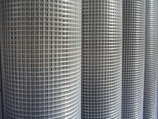
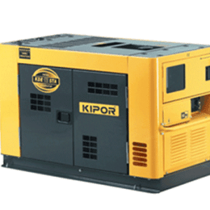

Jual Atap Lengkung di Jakarta Utara ☎ ??? (www.dis.or.id)
Salah satu komponen terpenting dari sebuah bangunan baik itu kecil, sedang, besar maupun megah sekalipun pasti memerlukan atap. Bisakah anda membayangkan bagaimana sebuah bangunan tanpa atap? Apakah kita masih bisa menyebut bangunan tersebut sebagai bangunan? Mungkin lebih tepat bila kita menyebutnya bangunan yang terbengkalai. Keberadaannya amatlah penting sehingga berkembanglah beragam jenis atap sesuai kebutuhan konsumen. Salah satu atap yang paling laris di pasaran adalah atap yang terbuat dari galvalum. Adapula atap galvalum yang berbentuk unik yaitu atap lengkung galvalum. Banyak sekali jenis ragam atap mulai dari yang konvensional sampai modern yang dapat digunakan dalam sebuah pembangunan. Ada pula atap galvalum dengan bentuk unik seperti atap lengkung, gelombang dan lain sebagainya. Apa yang terjadi? Tentu anda tahu, atap tersebut tidak akan bertahan lama dan bahkan bisa langsung roboh karena tidak adanya pondasi yang menyangganya.
Distributor & Supplier Atap Lengkung

Selain berfungsi sebagai atap lengkung Jakarta Utara sebuah bangunan baik itu rumah, kantor maupun stadion. Ya, atap lengkung Jakarta Utara sangatlah dibutuhkan untuk setiap bangunan yang dibangun oleh manusia. Masing-masing atap lengkung mempunyai keunggulan dan kelemahan sendiri.
Saat ini banyak sekali jenis atap dengan berbagai bahan dasar pembuatnya. Macam bentuknya sendiri antara lain adalah atap lengkung Jakarta Utara, gelombang, datar, bahkan patah-patah. Atap lengkung mempunyai struktur yang sangat terkomposisi sehingga membuat bentuknya menjadi lengkung dan dapat dijadikan sebagai atap lengkung Jakarta Utara.
Atap lengkung biasa dapat anda temukan pada bangunan-bangunan yang dibuat untuk keperluan olahraga. Atap dengan kualitas baik adalah atap lengkung Jakarta Utara yang kuat menahannya derasnya iklim dan cuaca. Bila anda tertarik untuk mempunyai atap lengkung Jakarta Utara pada bangunan anda maka janganlah ragu. Bila anda mencari atap galvalum dengan lengkungan yang unik tersebut. Kami menyediakan atap lengkung Jakarta Utara sesuai dengan keinginan anda. Kunjungi dis.or.id dan kami akan siap membantu kebutuhan anda.
Info Pemesanan Selengkapnya
Google Maps: https://www.google.com/maps/d/u/0/viewer?mid=1jTQUf9ULWdUIa8iDLwabVtcOdrQf8Eme&ll=-7.272623401464149%2C112.6482284&z=17
Note: https://www.facebook.com/notes/distributor-of-industrial-supply/pabrik-supplier-atap-lengkung/1782710675362145/
Event: https://www.facebook.com/events/137280070316926/
Portfolio Produk: https://www.facebook.com/pg/DistributorOfIndustrialSupplyDIS/photos/?tab=album&album_id=1683772021922678
Distributor & Supplier Besi Beton

Beragam jenis beton tersebut bisa diaplikasikan untuk berbagai kebutuhan pembangunan. Besi beton sendiri adalah material yang biasa digunakan dalam konstruksi dengan kekuatan yang sangat besar serta tahan terhadap berbagai guncangan dan tekanan. Besi beton dapat menjadi pondasi pada bangunan yang kuat sehingga membuat bangunan yang aplikasikan besi ini dapat kokoh dan tahan lama. Dan besi beton polos memiliki penampakan benda dengan permukaan licin atau tidak bersirip.
Salah satu cara untuk mendapatkannya adalah dengan membeli di dis.or.id. Karena, disan anda bisa mendapatkan besi beton yang anda inginkan yang pastinya sesuai dengan yang anda ekpetasikan. Jadi, anda tidak perlu ragu lagi.
Distributor & Supplier Steel Grating

Seiring dengan perkembangan zaman, dunia pembangunan bidang kontruksi juga mengalami perubahan amat drastis. Steel grating sangat aman untuk digunakan pada beberapa kontruksi bangunan. Sehingga ketika Anda akan mencari Plat Grating bisa melakukan order pada toko bangunan penyedia barang ini. Grating ini disusun dari baja berkalit dan dilas di bagian permukaan silangnya. Tentunya dengan berbagai model dan tipe yang beragam. Terbuat dari bahan yang hot deep galvanis sehingga grating tidak mudah berkarat meskipun terkena air hujan di setiap harinya.
Maka dari itu, jika anda membutuhkan steel grating untuk keperluan pembangunan, anda bisa langsung saja mengunjungi dis.or.id. Karena disana anda bisa mendapatkan steel grating yang berkualitas dan harga yang ditawarkan pun sangat terjangkau dan pastinya cocok untuk kantong anda. Memesan steel grating di dis.or.id pastinya anda tidak akan merasa rugi.
Distributor & Supplier Pipa (Hitam/Gas, Galvanis)

Manfaat dari pipa hitam galvanis memang banyak sekali untuk kebutuhan konstruksi bangunan. Karena kekuatan yang dimiliki olehnya, tak heran bila pipa hitam banyak digunakan pada kebutuhan konstruksi. Kebanyakan orang memanfaatkan pipa hitam ini pada area pertambangan gas dan minyak, sebagian orang pun bahkan mengira bahwa nama asli dari pipa hitam memanglah pipa gas. Hubungi segera kontak yang telah tersedia untuk informasi lebih detail, kami menerima segala kebutuhan besi baja anda kapanpun dan dimanapun.
Distributor & Supplier Kawat Bronjong/Gabion

Umumnya, kawat ini dipasang di tebing yang rawan sekali mengalami longsor, terutama ketika musim hujan tiba. Bentuknya sama seperti kawat pada umumnya. Hanya saja, Anda harus tahu kawat ini terbuat dari baja. Agar tidak berkarat sehingga bisa bertahan dalam kurun waktu yang lama, kawat ini dibuat dari bahan galvanis yang anti karat. Kawat bronjong ini juga biasanya dipasang pada pilar jembatan agar tidak tergerus karena adanya arus air. Selain itu, kawat ini juga digunakan sebagai pemecah gelombang ringan.
Jika anda sedang mencari kawat bronjong, anda bisa datang dan mengunjungi situs dis.or.id. Disan anda bisa mendapatkan informasi tentang kawat bronjong dengan berbagai ukuran dan harga yang pastinya sangat terjangkau. Sehhingga, anda bisa leluasa memilih kawat bronjong mana yang susuai dengan yang anda butuhkan.
Distributor & Supplier WF H-beam

Saat ini, banyak orang yang ingin mencari jenis besi WF, terlebih ini zaman yang serba modern dan praktis. jenis besi WF banyak dimanfaatkan sebagai konstruksi baja. Kekuatan dari besi ini sangat besar dan padat serta kuat dengan daya tekan dan tarik yang tinggi. Di samping itu, kepadatan yang tinggi juga dimiliki oleh besi jenis ini sehingga kualitasnya memang benar-benar terjamin.
Jika membawanya Anda juga tidak perlu khawatir keberatan karena besi ini lebih ringan dan praktis.
Untuk itu bagi anda yang sedang mencari besi baja dengan kualitas terbaik. Ada baiknya anda langsung mengunjungi dis.or.id. Segera kunjungi situs tersebut dan dapatkan penawaran menarik. Pastinya dengan harga yang sangat terjangkau.
Distributor & Supplier Expanded Metal
.jpg)
Expanded Metal adalah sebuah material dari baja yang dibentuk dengan model berlubang hampir mirip dengan anyaman. Expanded Metal memiliki corak yang sangat unik dengan berbagai bentuk berbeda. Beberapa keunggulan yang ditawarkan oleh expanded metal seperti ini adalah dikenal memiliki bentuk yang indah serta homogen, relatif lebih ringan, lebih vareatif dalam hal pengaplikasiannya, dan mudah sekali dipasang.
Expanded Metal ada yang berbentuk diamond dengan model yang lebih menarik, kuat, ekonomis, serta tahan lama. Disana terdapat berbagai informasi mengenai expanded metal yang anda butuhkan.
Distributor & Supplier Plat (Hitam, Kapal, Bordes, Strip)
.JPG)
Apabila anda saat ini sedang mencari tempat atau toko yang jual plat hitam , anda dapat menemukannya di toko besi terdekat. Namun yang terpenting pastikan anda membeli plat besi SNI. Harga plat besi bordes, strip dan plat besi lainnya sangat terjangkau per meter persegi. Sebenarnya bila anda pernah melihat triplek, maka seperti itu lah plat besi hitam hanya saja terbuat dari besi.
Kualitas yang diberikan sudah terjamin dan bisa anda buktikan sendiri. Anda pastinya tidak akan rugi jika membeli plat besi dengan banyak varian dan jenis yang disediakan disana.
Distributor & Supplier Floor Deck (Bondex)

Anda yang punya rencana pembangunan dan membutuhkan material untuk pengecoran lantai mungkin bisa menggunakan floor deck. Memasang Floordeck berarti memasang bekesting tetap pada areal yang luas dalam waktu singkat dan menghemat pemakaian perancah tiang penyangga. Panel Floordeck akan membentuk lantai kerja yang aman yang berfungsi untuk pelindung cuaca lantai bawahnya. Bentuk dari Floor Deck ini umumnya bergelombang serta dari segi ukurannya selalu sama, yaitu 5 cm.
Jika anda ingin mengetahui lebih lanjut mengenai floor deck ini, anda bisa langsung mengunjungi dis.or.id. Disana anda bisa mendapatkan floor deck yang anda inginkan dan tentunya dengan harga yang jauh lebih murah di bandingkan dengan tempat lainnya.
Distributor & Supplier Atap Galvalum

Seng galvalum adalah bahan seng dengan berbagai kelebihan yang memiliki komposisi tertentu. Galvalum memiliki banyak kelbihan sehingga dia lebih banyak digunakan jika dibandingkan dengan kayu.
Banyak sekali kelebihan yang dimiliki oleh atap galvalum ini. Patut anda ketahui, jenis baja yang saya maksud kali ini bukan baja berat seperti halnya alat berat, melainkan baja ringan, sehingga tidak akan membebani dinding rumah anda. Kerap kali disebut baja ringan, kekuatannya tidak kalah bila dibandingkan dengan baja konvensional.
Besar kecilnya galvalum tergantung pada kebutuhan anda. Namun, banyak anggapan yang mengatakan bahwa memasang galvalum akan membuat rumah akan terasa panas dan berisik. Ada pula tanggapan yang mengatakan bahwa atap galvalum itu panas dan juga berisik. Ini dikarenakan seng menyebabkan rumah anda menjadi terasa panas. Karena galvalum mempunyai daya tahan karat 4x dari galvanis. Atap galvalum mempunyai banyak tipe, jenis dan ukuran yang sesuai dengan ukuran yang dapat anda pilih.
Distributor & Supplier Truss Canal C
Rayap tentunya tidak dapat menggerogoti besi yang satu ini. Sehingga gabungan keduanya menghasilkan kualitas yang bila ditandingkan dengan bahan gabungan lain maka tidak akan kalah berkualitasnya. Jarak antar reng galvalume perlu diperhatikan. Besi ini tidak dibuat oleh tukang las biasa, melainkan di olah oleh pabrik yang khusus bergerak dibidang peleburan besi dan logam. Maka janganlah ragu dengan pilihan anda. Disana anda akan banya kmendapat info menarik seputar truss besi kanal c dan masih banyak lagi.
Distributor & Supplier Hollow Galvalum

Hollow Galvalum adalah bahan material bangunan yang terbuat dari logam dan bersifat anti karat. Penggunaan besi ini sebagai rangka atap rumah sudah mulai banyak digunakan dalam beberapa tahun terakhir ini. Bahkan kini besi ini sudah mulai menggeser penggunaan kayu pada rangka plafon.
Selain dinilai lebih kuat, ternyata juga lebih ekonomis. Jika anda berencana membangun sebuah plafon, saran saya pilihlah ukuran yang saya sebutkan diatas. Disana sudah banyak info mengenai hollow galvalum, dari mulai ukuran, harga, berat dsb.
Distributor & Supplier Seng Gelombang

Seng gelombang memiliki banyak keunggulan dari berbagai sisi. Kali ini seng gelombang hadir dengan desain warna yang menarik-menarik. Seng gelombang adalah salah satu solusi yang kami rekomendasikan untuk anda. Seng gelombang memiliki banyak keunggulan dari berbagai sisi. Tak heran jika seng gelombang melengkapi fiturnya dengan menyediakan beragam ukuran seng gelombang menurut standar SNI. Terkadang tak hanya jenis seng gelombang dengan ukuran besarlah yang dicari kebanyakan orang.
Bila anda sedang mencari seng gelombang dengan keunggulan dan kualitasnya. Distributor penjual seng gelombang sekarang ini sudah menyebar ke seluruh Indonesia, baik di kota-kota besar maupun kecil.
Distributor & Supplier Plat Seng

Plat seng dan plat galvalum banyak digunakan untuk berbagai kebutuhan, dari kebutuhan pembangunan rumah, industri, pabrik dan berbagai kegunaan lainnya. Anda dapat memilih lebaran atau per meter sesuai dengan fungsinya.
Hal ini tidak lain dikarenakan plat galvanis lembaran memiliki ukuran yang lebih luas dan bermeter meter. Masalah klasik dari penggunaan seng adalah mudah terkena karat atau terjadi korosi, menimbulkan suara bising ketika hujan, dan juga membuat rumah anda terasa panas. Berbicara tentang plat seng maka tentu tidak lepas dengan galvalum dan galvanis, yang merupakan jenis plat seng paling berkualitas. Plat gavalum sendiri sering dinilai sebagai pengganti seng biasa terbaik, plat jenis ini sudah banyak digunakan untuk talang, pabrik, rumah, ataupun kebutuhan outdoor lainnnya.
Lalu berapa harga plat galvanis 2018? Bila anda sedang mencari harga terbaru hari ini juga, anda dapat menghubungi kami karena kami menjual plat galvanis, galvalum dengan berbagai ketebalan dan ukuran.
Distributor & Supplier Genteng Metal

Genteng metal adalah salah satu jenis genteng yang berbahan dasar Zincalume, bahan ini merupakan salah satu jenis bahan yang digunakan pada baja ringan. Sebelum itu, kami akan menjelaskan apa itu genteng metal dan genteng metal pasir. Namun sedikit demi sedikit orang mulai lebih memilih genteng metal karena lebih banyak kelebihan yang dimilikinya. Secara sederhana genteng metal adalah salah satu jenis genteng yang terbuar dari kumpulan berbagai bahan logam dan memiliki ciri kas mengkilat, ringan dan tahan lama. Anda cukup menghubungi contact person yang sudah tertera di setiap industri yang anda butuhkan.
Silahkan hubungi kami untuk informasi lebih lanjut.
Distributor & Supplier Besi Wiremesh

Wiremesh merupakan besi lonjor panjang yang disusun seperti anyaman sehingga membentuk lembaran. Nama lain dari besi wiremesh ini adalah besi anyam. Ada banyak jenis besi wiremesh, diantaranya adalah besi wiremesh dengan desain kotak dan jajar genjang. Untuk kepentingan konstruksi, besi wiremesh diaplikasikan untuk keperluan anak tangga, plat lantai, dan penguat dak beton. Setiap jenis bentuk wiremesh dimanfaatkan untuk kebutuhan yang berbeda-beda, tergantung dari anda memilih jenis anyam kotak atau jajar genjang. Sedangkan untuk kebutuhan bangunan biasa menggunakan jenis wiremesh ukuran 4 sampai 6 sudah cukup kuat. Kami disini menawarkan besi wiremesh dengan kualitas terbaik, di produksi dengan sistem las otomatis sehingga kuat dan susunannya rapi. Jika anda membutuhkan besi ini, segera hubungi kami dikontak yang tersedia.
Distributor & Supplier Pagar BRC

British Reinforced Concrete / Pagar BRC merupakan pagar yang dibuat dari material beton dengan diameter variasi 5 mm – 8 mm tergantung dengan ukuran ketinggian. Untuk soal kekuatannya, pagar BRC dibuat dengan tegangan tinggi U55 grade yang memiliki tegangan ijin 2900kg/cm2 sehingga kekuatan yang ia miliki bahkan mencapai 2. 5 kali dari kekuatan besi biasa. Anda dapat mengunjungi situs resmi kami di www.dis.or.id, karena pada situs ini terdapat informasi detil mengenai spesifikasi ukuran dan harga.
Distributor & Supplier Kawat Loket, Kawat Harmonika

Apakah anda membutuhkan kawat untuk penyekat? Kawat pagar? Penutup jendela? Atau kebutuhan lainnya? Untuk kebutuhan seperti ini anda bisa gunakan kawat loket harmonika yang memiliki bentuk seperti anyaman dan kuat. Tak hanya sampai disitu, kebutuhan akan kawat loket harmonika mencakup berbagai bidang industri, baik keperluan rumahan sampai industri. Kami menyediakan kawat harmonika dengan berbagai ukuran, tersedia ukuran kawat dengan diameter 1,5 mm sampai 4 mm dan ukuran lubang 20 mm sampai 70 mm. Kawat loket harmonika yang kami tawarkan berkualitas mutu tinggi sehingga cocok untuk berbagai keperluan, segera hubungi kami untuk informasi pemesanan!
Distributor & Supplier CNP & UNP

Besi UNP / besi kanal merupakan besi yang memiliki bentuk lengkung seperti huruf U yang banyak diaplikasikan untuk sambungan maupun dudukan atap. Jika dilihat secara mendetail, anda pasti membayangkan bahwa spesifikasi dari besi UNP sendiri hampir mirip dengan besi WF. Besi UNP juga sering dikaitkan dengan besi CNP yang juga masuk dalam kategori kelasnya. Untuk bentuknya sendiri besi CNP memiliki bentuk yang melengkung dan membentuk huruf C, untuk itulah kenapa banyak orang yang menyebutnya sebagai besi profil C. Besi UNP dan CNP sangat fleksibel mengingat ia dapat dimodifikasi dari plat koil menggunakan teknik cutting.
Distributor & Supplier Besi Siku

Besi siku dibuat dengan bentuk standar yang telah disesuaikan berdasarkan kebutuhan penggunanya, tak heran bila ia masuk kategori besi penyangga yang dapat diandalkan. Kedua sisi pada besi siku berbentuk tegak lurus dengan sudut yang berbeda, ada besi siku sama sisi, dlsb. Ukuran panjang dari besi siku yang kami sediakan adalah panjang 6 meter, dan ketebalan yang bisa anda sesuaikan dengan kebutuhan. Kami menerima segala kebutuhan anda mengenai besi siku ini! Tentu saja produk yang kami tawarkan berkualitas unggul. Anda dapat manfaatkan produk besi siku dari perusahaan kami untuk keperluan industi, otomotif, bangunan, furnitur, konstruksi dan sebagainya.
Distributor & Supplier Hollow (Hitam, Galvanil, Galvanis)

Sekarang ini besi hollow pemanfaatannya sudah melebihi kayu, meskipun terbuat dari besi kualitasnya pun tidak dapat diragukan lagi.Sekarang sudah banyak orang yang beralih pemanfaatan dari kayu menjadi menggunakan besi hollow.Banyak orang yang mulai beralih dari pemanfaatannya yang menggunakan kayu beralih pada hollow hitam galvanil.Besi hollow saat ini menjadi material pengganti kayu yang sangat baik. Anda bisa menghubungi kontak yang telah tersedia untuk informasi produk lebih detail. Besi hollow bisa dimanfaatkan untuk berbagai keperluan, misalnya seperti pagar, pintu besi, teralis, dan masih banyak lagi. Anda dapat menghubungi kontak kami untuk melakukan perhitungan kebutuhan hollow hitam tersebut. Hubungi kami untuk lakukan konsultasi kebutuhan besi hollow dan panjang yang dibutuhkan. Bagi anda yang membutuhkan besi ini, kami dapat membantu anda untuk menentukan ukuran besi yang diperlukan dengan menghubungi kontak kami!
Distributor & Supplier Pipa Pancang

Terutama bagi Anda yang sedang membangun proyek di atas permukaan laut, tentu saja ini akan sangat membantu. Sedangkan dari segi spesifikasi, pipa pancang tersedia dalam berbagai ukuran. Sedangkan dalam pemesanannya, jangan khawatir karena banyak sekali penjual tiang pancang terpercaya yang bisa Anda temukan. Nah, bagi Anda yang sedang membutuhkan pipa pancang, jangan khawatir karena Anda bisa mendapatkannya dengan mudah. Terutama untuk memilih produk DIS. Dengan demikian Anda akan mendapatkan pipa pancang berkualitas.
Jasa Pondasi Bor (Strouss/Borepile)

Dalam hal ini, sekarang Anda tidak pelru khawatir karena ada banyak jasa yang melayani jasa pondasi bor. Selanjutnya, untuk masalah di mana jasa ini bisa di temukan, maka Anda bisa memesannya di sini dengan mudah. Namun perlu di ketahui pula bahwasanya selama proses akan memunculkan suara bising sekalipun tanpa getaran. Dalam prosesnya, pengeboran ini akan menimbulkan suara bising karena mesinnya yang sedang bekerja. Yakni pengeboran manual atau yang otomatis dengan menggunakan mesin. sedangkan jika di lihat dari segi kualitas, sebenarnya kedua jenis ini sama-sama bagus.
Distributor & Supplier Genset (New/Second)

Genset atau generator set tentu saja juga sudah sangat familiar karena memang hingga kini banyak yang menggunakannya. Dalam penggunaannya, genset ini menggunakan bahan bakar berupa solar. Dalam penjualan nya, genset ini biasanya ada dua pilihan yaki dalam kondisi baru maupun second atau bekas. Dan keduanya pun bisa Anda dapatkan di DIS.
Kalau masalah harga, memang genset cukup mahal sehingga banyak yang memilih untuk membeli yang bekas. genset sendiri tersedia dalam berbagai pilihan merk sesuai perusahaan yang mengeluarkan nya dan bisa Anda jadikan pilihan mana yang sekiranya paling sesuai. Kini ditributornya pun telah tersear di mana-mana sehingga lebih mudah. Dengan demikian Anda bisa menyesuaikan dengan kebutuhan maupun keuangan.
Distributor & Supplier UPS

Kalau menyebut UPS, mungkin akan banyak yang bertanya-tanya sebenarnya apa sih barang yang satu ini. Sedangkan pengertian UPS sendiri merupakan salah satu dari sekian banyak alat elektronik yang mampu di jadikan sebagai sumber listrik sementara manakala sumber utamanya terputus. Sedangkan UPS sendiri merupakan sebuah alat elektronik yang mampu akan menjadi sumber listrik pengganti sementara jika sumber utamanya terputus. UPS sendiri secara umum sebenarnya cukup penting untuk di miliki. Terutama bagi yang sering menggunakan komputer. Sedangkan dari jenisnya, UPS cukup variatif. Mulai dari kualitas maupun kapasitas yang di miliki. mengingat akan hal tersebut, maka Anda bisa memilih yang paling pas untuk pembeliannya. Sedangkan untuk memiliki UPS berkualitas, Anda bisa merujuk pada DIS.
Distributor & Supplier Forklift (Second)

Dalam setiap industri, baik itu industri kecil, menengah, hingga yang besar, tentu saja akan banyak yang menggunakan forklif. Termasuk untuk forklif yang dalam kondisi bekas. Jika tidak ingin yang baru pun Anda bisa memilih forklif yang di jual bekas. Sedangkan di sini, Anda bisa menemukan penjualan tersebut dengan kualitas barang yang memuaskan sekalipun merupakan barang second. Bahkan meskipun bekas, bisa terlihat seperti baru. Di samping itu, yang akan lebih memudahkan lagi adalah forklif yang tersedia sudah siap pakai. Apalagi, di sini yang di tawarkan adalah forklif yang siap pakai.
Jasa Pembuatan Moulding Inject

Anda sedang bingung akan membuat inject moulding? Terkait akan hal tersebut, jangan khawatir karena saat ini ada banyak penawar jasa, termasuk yang di sarankan DIS, yang siap membantu Anda. bahkan kalau berbicara kualitas hasilnya di sini, bisa di pastikan akan sangat bermutu. sedangkan untuk masalah kuantitas moulding inject nya, jangan khawatir karena tanpa batasan cetak, berapa pun keinginan Anda, pasti akan di layani. Anda pun bisa memilih kira-kira ide seperti apa yang paling pas untuk produk Anda sehingga pembuatannya bisa tepat sasaran.
Jasa Pembuatan Sparepart Mesin Produksi / Alat Berat

Sparepart tentu saja sudah tidak asing lagi di dunia permesinan. Bukan hanya dalam penggunaannya, akan tetapi juga pembuatannya. Oleh karena itu, silahkan menggunakan jasa terpercaya yang di sediakan di sini sehingga akan memiliki hasil yang terjamin. salah satunya seperti yang di tawarkan di DIS. Sedangkan untuk masalah harga, tentu saja sangat variatif. Semakin baik spesifikasi nya, tentu akan semakin mahal.
Jasa Service Elektronik (Kompor Gas, Dispenser, Mesin Cuci)

Ketika Anda memiliki beberapa alat elektornik yang rusak, apa salahnya jika berusaha memperbaikinya. Jadi ketika terasa ada yang salah dengan barang-barang elektronik Anda, jangan khawatir karena di sini Anda bisa memperbaiki dan mendapatkan hasilnya seperti sedia kala. Selanjutnya, untuk masalah kualitas, tidak perlu di pertanyakan lagi karena DIS akan memberikan jasa yang memiliki perhitungan tingkat perbaikan dan keamanan yang tinggi. Akan tetapi pada umumnya, orang-orang yang melakukan service elektronik adalah pada barang yang bermasalah. Hanya saja kebanyakan orang memang melakukan service elektronik saat ada keluhan yang di rasakan saja.
Nah, apakah anda sudah mengerti betapa pentingnya atap untuk keperluan setiap pembangunan? Tentu sangat penting bukan? Atap sangat dibutuhkan dalam setiap pembangunan sehingga membuatnya sering dicari. Karena tanpa atap, maka sebuah bangunan akan kehilangan jati dirinya sebagai bangunan yang sebenarnya. Memang, ada beberapa bangunan mewah yang sudah memakai beton sebagai atapnya. Tapi salah satu solusi selain hal tersebut adalah menggunakan atap dengan berbagai jenis sesuai dengan yang saya bahas diatas. Seperti yang saya jabarkan diatas fungsi atap sudah tidak terbantahkan dan tidak dapat digantikan lagi. Karena semua bangunan pastinya membutuhkan atap agar dapat terlindung dari serangan cuaca ringan bahkan ekstrim sekalipun. Dapatkan pula info menarik tentang bahan-bahan bangunan yang anda cari.